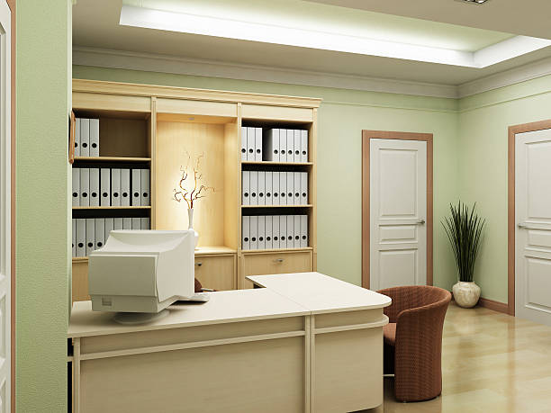

What is the most prestigious private office space in Metro Center Washington DC?
Posted by on 2024-06-05
When it comes to private office spaces in Metro Center, Washington DC, one name stands out as the most prestigious: The Franklin Tower. Located in the heart of downtown DC, The Franklin Tower offers a luxurious and exclusive environment for businesses and professionals looking for top-notch office space.
What sets The Franklin Tower apart from other private office spaces in the area is its unparalleled amenities and services. From state-of-the-art technology and high-speed internet to premium furnishings and stylish decor, every detail has been carefully curated to provide a sophisticated work environment.
In addition to the physical space itself, The Franklin Tower also offers a range of services designed to cater to the needs of its discerning clientele. This includes concierge services, on-site catering options, meeting room facilities, and access to networking events and professional development opportunities.
But perhaps what truly sets The Franklin Tower apart is its prestigious reputation. As one of the most sought-after office locations in Metro Center, this building attracts some of the city's most prominent businesses and professionals. Being associated with The Franklin Tower can elevate your brand image and give you instant credibility in the competitive DC market.
Overall, if you are looking for the most prestigious private office space in Metro Center Washington DC, look no further than The Franklin Tower. With its upscale amenities, impeccable service, and esteemed reputation, this is where you want to be if you value excellence in your workspace.